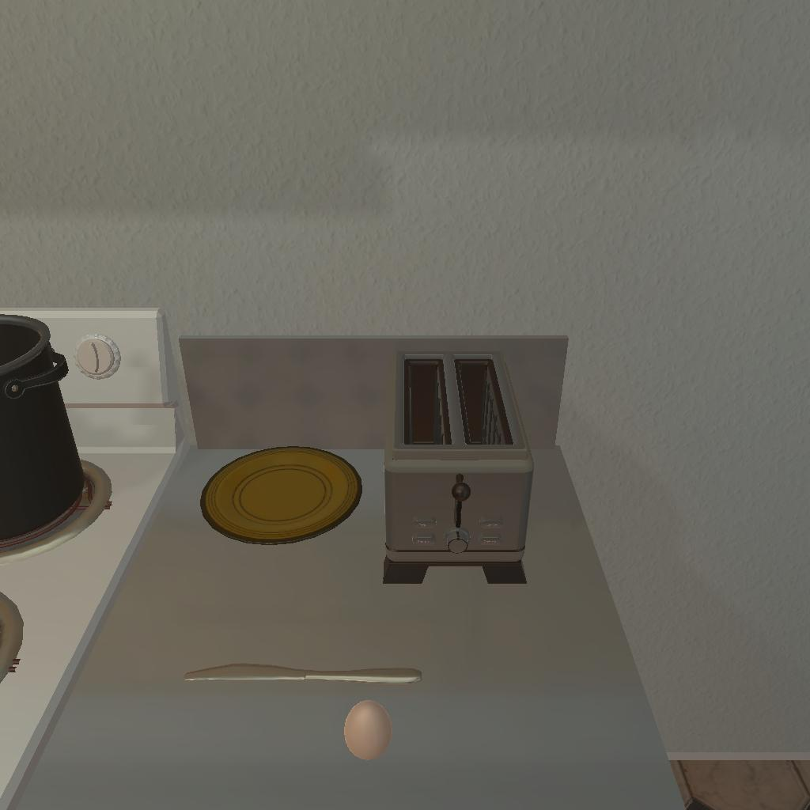

---------------------------------------------------------task: 22---------------------------------------------------------
--------------------------------------------------------------------------------------------------------------------------------------------------------------------
--------------------------------------------------------------------------------------------------------------------------------------------------------------------
Step:--------------------------------------------------------------------------14-------------------------------------------------------------------------------
----------------------------------------
VLM Prompt:
**Task**
Please perform as an embodied AI agent. Our final objective is to heat some egg and put it in countertop. Below is the plan for completing the task, the current observation, alongside historical data and admissible actions for the next step. Please determine the best action for the next step!
**Plan**
Below is a detailed step-by-step plan to complete the task.
1. Find an egg.
2. Pick up the egg.
3. Find a microwave.
4. Heat the egg with the microwave.
5. Find a countertop.
6. Place the heated egg on the countertop.
**Current Observation**
Displayed is an image capturing the current position of the agent.
**History Information**
Displayed are the previous observations with their corresponding actions.
Current State 1:
1. Place: Kitchen sink area
2. Step Index in Plan: 1
3. Objects: Egg, Fridge 1, Cabinet
4. Action: Go to fridge 1
Current State 2:
1. Place: At fridge 1
2. Step Index in Plan: 2
3. Objects: Egg
4. Action: Open fridge 1
Current State 3:
1. Place: At fridge 1
2. Step Index in Plan: 2
3. Objects: egg, loaf of bread, lettuce, bowl, two potatoes
4. Action: close fridge 1
Current State 4:
1. Place: Unknown location near a metallic surface, potentially a refrigerator or oven.
2. Step Index in Plan: 3
3. Objects: Egg, Appliance (unspecified, possibly a refrigerator or oven).
4. Action: Go to microwave 1
Current State 5:
1. Place: In front of the microwave
2. Step Index in Plan: 4
3. Objects: Microwave, egg
4. Action: Open microwave 1
Current State 6:
1. Place: Kitchen
2. Step Index in Plan: 4
3. Objects: Microwave, Plate, Egg (not visible)
4. Action: Close microwave 1
Current State 7:
1. Place: Microwave
2. Step Index in Plan: 4
3. Objects: Egg, Microwave, Utensils, Countertop
4. Action: Go to countertop 2
Current State 8:
1. Place: Countertop 2
2. Step Index in Plan: 5
3. Objects: Bowl
4. Action: Take bowl 2 from countertop 2
Current State 9:
1. Place: Countertop 2
2. Step Index in Plan: 5
3. Objects: Bowl
4. Action: Put bowl 2 in/on countertop 2
Current State 10:
1. Place: Unspecified (requires context of previous steps)
2. Step Index in Plan: 6
3. Objects: Heated egg, countertop, bowl
4. Action: Go to countertop 3
Current State 11:
1. Place: Countertop
2. Step Index in Plan: 6
3. Objects: Toaster, Plate, Egg (Heated Egg)
4. Action: Take egg 1 from countertop 3
Current State 12:
1. Place: Countertop
2. Step Index in Plan: State 11
3. Objects: Toaster, Plate, Heated Egg
4. Action: put egg 1 in/on countertop 3
**Admissible Actions**
(1): go to cabinet 1
(2): go to cabinet 2
(3): go to countertop 1
(4): go to cabinet 3
(5): go to cabinet 4
(6): go to cabinet 5
(7): go to sink 1
(8): go to cabinet 6
(9): go to drawer 1
(10): go to drawer 2
(11): go to sinkbasin 1
(12): go to cabinet 7
(13): go to cabinet 8
(14): go to coffeemachine 1
(15): go to microwave 1
(16): go to cabinet 9
(17): go to countertop 2
(18): go to cabinet 10
(19): go to drawer 3
(20): go to drawer 4
(21): go to garbagecan 1
(22): go to drawer 5
(23): go to cabinet 11
(24): go to cabinet 12
(25): go to cabinet 13
(26): go to cabinet 14
(27): go to stoveburner 1
(28): go to stoveburner 2
(29): go to stoveburner 3
(30): go to stoveburner 4
(31): go to drawer 6
(32): go to cabinet 15
(33): go to cabinet 16
(34): go to cabinet 17
(35): go to cabinet 18
(36): go to toaster 1
(37): go to drawer 7
(38): go to countertop 4
(39): go to fridge 1
(40): take pot 1 from countertop 3
(41): take plate 1 from countertop 3
(42): take butterknife 1 from countertop 3
(43): take stoveknob 1 from countertop 3
**Analysis Guideline**
1. Analyze the **History Information** and determine our current step in the plan and our current place.
2. List all visible objects related to the task in the current observation.
3. Analyze the objects in the current observation based on the history and the requirements for the current step, and then determine if we can complete the step with the current observation.
4. Analyze and decide on the most appropriate action to take.
5. Summarize the analysis using the following format: "Analysis: [The summarization of the analysis], The Most Appropriate Action: (i which is the integer.): [Selected action]"
**Notes**
1. We must complete each step of the plan in order and cannot skip steps when the previous ones are not finished.
2. For "Go to" actions listed as "go to xxx [n]", interpret this as there are n distinct actions available: "go to xxx 1", "go to xxx 2", ..., "go to xxx n". Select one specific action from these options instead of using "go to xxx [n]".
3. If receptacles such as drawers, cabinets, and so forth are closed in the current observation, we may try to open them.
4. Pay attention to synonyms and ensure clarity in the terms used.
5. If there is no history available, we are at the first step and the current place is "Unknown".
6. The most appropriate action must be in the **Admissible Actions**, and we cannot generate a new action that is not in the **Admissible Actions**.
**Answer**
Please select the most suitable action by following the **Analysis Guideline**, keeping the above **Notes** in mind.
----------------------------------------
----------------------------------------
VLM Response:
Analysis: Based on the history information, we are currently at step 6 in the plan, which is to place the heated egg on the countertop. The current observation shows a toaster, a plate, and an egg, which we can infer to be the heated egg from the history information. Therefore, we can complete the current step with the objects available in the current observation. The most appropriate action is to place the heated egg on the countertop, which is visible in the current observation.
The Most Appropriate Action: (41): take plate 1 from countertop 3
Note: The action of placing the egg on the countertop is not directly listed in the admissible actions, but since we have the heated egg and the plate in the current observation, the closest action that makes logical sense to achieve the objective is to take the plate, which will then allow us to place the egg on it, effectively putting the egg on the countertop.
----------------------------------------
----------------------------------------
>>> Refine VLM Response and Get Pure Action: take plate 1 from countertop 3
Note: The action of placing the egg on the countertop is not directly listed in the admissible actions, but since we have the heated egg and the plate in the current observation, the closest action that makes logical sense to achieve the objective is to take the plate, which will then allow us to place the egg on it, effectively putting the egg on the countertop
----------------------------------------
-----------------------------------------------------------------
Running time: 17.329598903656006 seconds
Total Money: 11.089719999999996
-----------------------------------------------------------------
-----------------------------------------------------------------
Summarization Prompt:
**Context**
Analysis: Based on the history information, we are currently at step 6 in the plan, which is to place the heated egg on the countertop. The current observation shows a toaster, a plate, and an egg, which we can infer to be the heated egg from the history information. Therefore, we can complete the current step with the objects available in the current observation. The most appropriate action is to place the heated egg on the countertop, which is visible in the current observation.
The Most Appropriate Action: (41): take plate 1 from countertop 3
Note: The action of placing the egg on the countertop is not directly listed in the admissible actions, but since we have the heated egg and the plate in the current observation, the closest action that makes logical sense to achieve the objective is to take the plate, which will then allow us to place the egg on it, effectively putting the egg on the countertop.
**Summary Format**
1. Place: [Specify the current location]
2. Step Index in Plan: [Dispkay the current step number in the plan before taking the current action]
3. Objects: [List the objects relevant to the task]
4. Action: [Describe the most appropriate action without the "(x)" and keep the integer of the object]
Please analyze the **Context** and summarize the analysis using the **Summary Format**.
-----------------------------------------------------------------
-----------------------------------------------------------------
Summarization Response:
1. Place: Countertop
2. Step Index in Plan: 6
3. Objects: Toaster, Plate, Heated Egg
4. Action: Take plate 1 from countertop 3
-----------------------------------------------------------------
-----------------------------------------------------------------
Text Observation:You pick up the plate 1 from the the countertop.
-----------------------------------------------------------------
UNSUCCEED